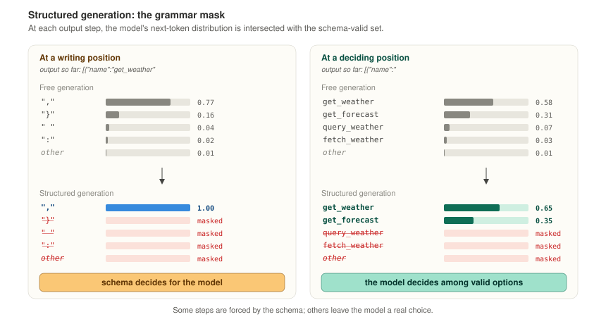

SKIM: Pruning LLM Agents via Selective Knowledge Informed Masking
A structured pruning method for LLM agents deployed under structured generation — where the schema handles formatting, so the model needn't.
TL;DR. When tool-calling LLMs are deployed under structured generation, the decoder emits JSON scaffolding for free. Existing pruners don't exploit this — they treat all output tokens as equally important. SKIM explicitly demotes neurons specialized in writing, freeing capacity for reading and deciding. A matched distillation recipe preserves the same asymmetry during recovery. At aggressive sparsity, SKIM retains more tool-calling accuracy than prior methods.
What is structured generation?
Structured generation is an inference-time technique that forces an LLM's output to conform to a schema. At each step, the decoder computes the full next-token distribution, then masks out any token that would violate the schema — JSON brace balance, legal tool name, valid argument key, and so on. The model samples only from what's left. This is how APIs like OpenAI's JSON mode, Anthropic's tool use, and libraries like Outlines, Guidance, and XGrammar enforce output validity.

Every major tool-calling deployment today uses some form of structured generation. That changes which abilities the model actually needs to preserve.
Motivation: pruning damages two things at once
Pruning a tool-calling model damages it in two ways. It starts producing malformed JSON, and it starts making genuine mistakes — picking the wrong tool, extracting the wrong argument.

If structured generation handles half the damage for free, why spend pruning budget protecting that half? That is the SKIM thesis.
Does this actually happen?

This is the gap SKIM targets. Pruning choices should be aware of structured generation: writing-specialist capacity is redundant at inference, while reading- and deciding-specialist capacity must be preserved. SKIM's score makes this asymmetry explicit.
Three token types, only two matter
A tool-calling sample splits into three token types. Reading: content endpoints in the prompt (last token of each tool name, description, and the user query). Deciding: output positions where the model picks a tool or a value. Writing: the rest of the output — JSON scaffolding the decoder emits at inference.

Pruning: score, demote, prune
SKIM scores each unit by the token types it activates during. Units active at reading and deciding are kept. Units active at writing are demoted — structured generation replaces their function at inference.

For each unit u, SKIM computes RMS activations at reading (ar), deciding (ad), and writing (aw) positions:
Reading and deciding contribute additively; writing enters as an exponential penalty. Globally rank, prune the bottom-k.
Distillation: recover with matching asymmetry
Basic KD applies forward KL at every output position, uniformly. SKIM KD keeps that term and adds two position-targeted ones: hidden-state matching at reading positions, and schema-restricted KL at deciding positions. Writing receives no extra loss — structured generation emits those tokens at inference.

L_logit_KL.
Reading gets hidden-state matching; deciding gets both; writing gets nothing extra.
KD ablations pending
The KD recipe factorizes into four independently-ablatable terms:
L_logit_KL (basic), L_hidden (reading and deciding positions),
L_dec_KL (schema-restricted at deciding), and the reading/deciding weight
split. Ablations for each are planned; numbers will be added when post-KD runs complete.
Results
We evaluate SKIM on Hammer-3B and Qwen2.5-3B across BFCL-v3 and API-Bank L1 at 25% structured sparsity. All numbers are full-match accuracy, reported as grammar-constrained (G) / free (F) pairs.
SKIM on Hammer-3B

Two readings of the same data. First, pre-KD alone: SKIM's pruning scorer already lands grammar-constrained accuracy close to LLM-Pruner's post-KD level (BFCL 0.790 vs 0.772; API 0.674 vs 0.652), without any KD pass. The pruning choice itself does most of the work. Second, with SKIM KD on top: BFCL reaches 0.850, approaching dense. The matched KD recipe closes most of the remaining gap on the benchmark where the pruning win was already strongest.
Qwen2.5-3B: work in progress pending
SKIM pre-KD on Qwen2.5-3B does not yet show a comparable pruning-stage win (0.133 / 0.000 on BFCL, 0.035 / 0.000 on API-Bank). Post-KD measurements are pending. We hypothesize that Qwen's more distributed use of MLP capacity makes pruning-step damage harder to recover without KD; whether the recipe transfers across architectures is an open question the post-KD run will settle.
Limitations
SKIM assumes deployment under structured generation. For free-form tool generation — or for tool-calling models expected to produce prose reasoning alongside JSON — the write-penalty assumption does not hold and the method should not be used as-is. The method also inherits calibration sensitivity common to all activation-based pruners: pruning with xLAM calibration and deploying on a very different tool distribution can underperform, and we recommend calibration data matched to deployment distribution.
Finally, the scoring formula is one-shot — SKIM prunes once based on initial activation statistics. Iterative or progressive pruning schedules, where the scorer is recomputed after partial removal, are a natural extension but outside the scope of this work.